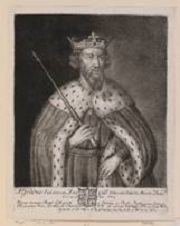

Британия VS Дания – война столетия! Судьба Англии на кону! И наконец войнам конец!
Предыстория для тех, кто плохо знает

Конунг Уэссекса (Британия) Экберт Великий с 825 по 829 г. покорил большую часть страны, названной Англией (Мерсия, Нортумбрия, Кент, Суссекс, Эссекс,и Восточная Англия)
Со стороны датчан начались регулярные набеги на Англосаксов. Эссекс решил дать отпор захватчикам.
Датчане (Ивар и Хальвдан) вторглись в Британию и с 865 по 876 г. захватили Восточную Англию и юго-восточную Нортумбрию.
Конунг Уэссекса (Британия) Альфред Великий начал войну (с 871 по 896 г) с датчанами. Он объединил под своей властью ряд соседних англосаксонских королевств.
На дворе 886 год, и Альфред возвращает себе Лондон!
Итак, конунг Альфред, прозванный Великим, наконец договорился с датчанами о мире.
По условиям договора:
1. Во-первых, теперь мир!
2. Во-вторых, страна разделяется на две части! Юго-западная часть Британии – владения конунга Альфреда, а северо-восточная датская. Датская строна называется Денло. И Денло превосходил владения Альфреда.